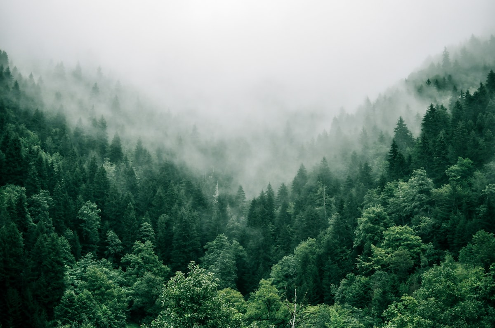

~15,000 Years Ago
Jōmon Origins
The Ainu are the indigenous people of the land called Ainu Mosir, meaning the land of the Ainu, consisting of Hokkaido, the southern Sakhalin and Kuril Islands. Their culture is a descendent of the Jomon tradition, the earliest inhabitants of the Japanese islands, arriving 15000 years ago during the last ice age, when the island was still connected to Asia.
~300 BCE – 1200 CE
The Yayoi & the Merge
When the Jomon communities on Honshu began to mix with the Yayai people from the Korean Peninsula, the northern Jomons communities remained isolated. Ultimately, merging with the Satsumon culture in the seventeenth to thirteenth century and the northern Okhotsk culture to form the Ainu culture.

Pre-Contact
Life in the Forest
For thousands of years, they lived a traditional life as hunter-gatherers in the dense forests, with a lifestyle of hunting bears and deer, fishing for salmon, and gathering shellfish along the coast. Trade was also central to the Ainu, operating as the middlemen of regional trade across the Sea of Okhotsk, moving goods between the Honshu in the south to the people of Sakhalin and Kurils in north and north-east Asia.

1600s
The Matsumae Clan
In the 1600s, Japanese influence was already apparent with the establishment of the Matsumae clan's trading outpost in the north of Hokkaido, where they exploited the Ainu, controlling access to rice, sake, iron, and cotton while demanding furs and fish in return.
1669
Shakushain's Revolt
In 1699, the chief Shakushain united Ainu communities across Hokkaido to lead a violent revolt against their trade overlords. However, this attempt was swiftly crushed with treachery, when Shakushain was killed during peace negotiations.

1789
Kunashiri-Menashi
In 1789, a second attempt at Kunashiri-Menashi under an even more cruel regime also failed, due to internal betrayals. By the eighteenth century, the Ainu had lost control over almost all of their ancestral territory.
1869
Meiji Annexation
When the Meiji government officially annexed Hokkaido in 1869, the Ainu had already fought for generations for their land (Fitzhugh and Dubreuil).
Worldview
Aynu Mosir & Kamuy Mosir
The Ainu worldview is composed of aynu Mosir, the realm of human beings; and kamuy Mosir, the realm of spirits (Utagawa). Everything alive was believed to have a Spirit, Kamuy, and everything in the mortal world, including animals, plants, and even elements were understood as Gods wearing a physical form. When a bear is killed, the Iyomante ceremony is performed so that the spirit is returned to the god's realm with gratitude, in which the kamuy can choose to visit again.
Sacred Symbols
Moreu & Aiushi
The sacred symbol at the center of Ainu culture is the moreu, a spiral shape that appears on every item in this exhibit. The second sacred symbol is the thorned barbs called the aiushi. These two symbols carry power. They are the only two design elements in Ainu art. When they are placed on the opening of clothes or tools, it serves to form spiritual protection called sermaka omare, which means sealing gaps where evil forces can enter. Traditionally, men carried inaw(s) prayer wands made from shaving willow while women wore ceremonial robes from elm bark meant to protect the wearer (Hunger)(Fitzhugh and Dubreuil).